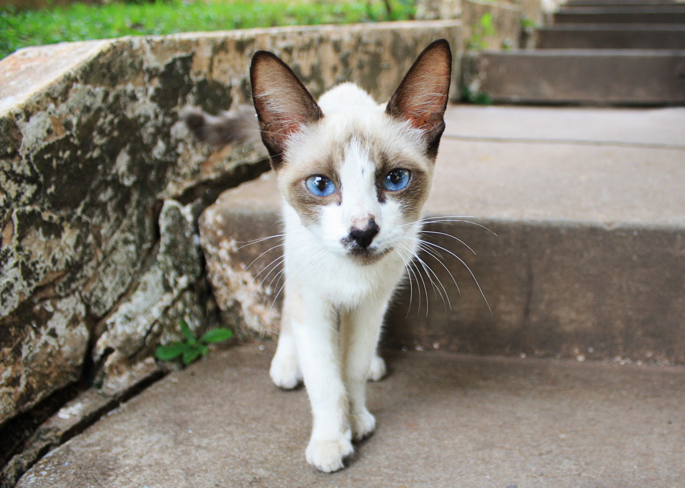
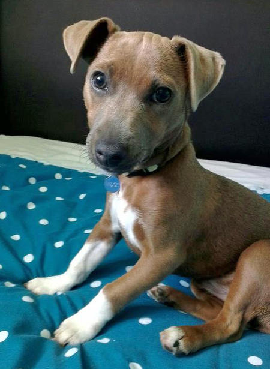
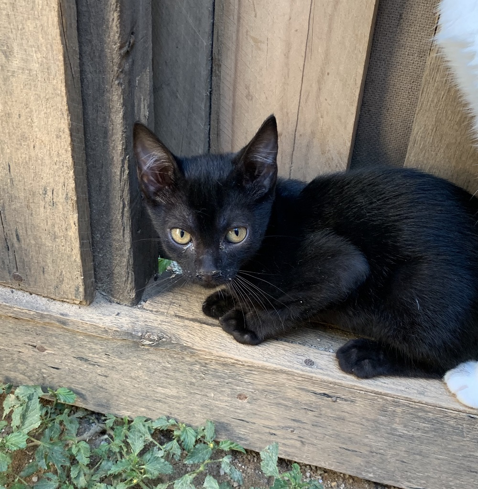
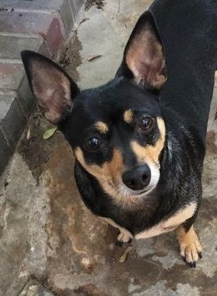
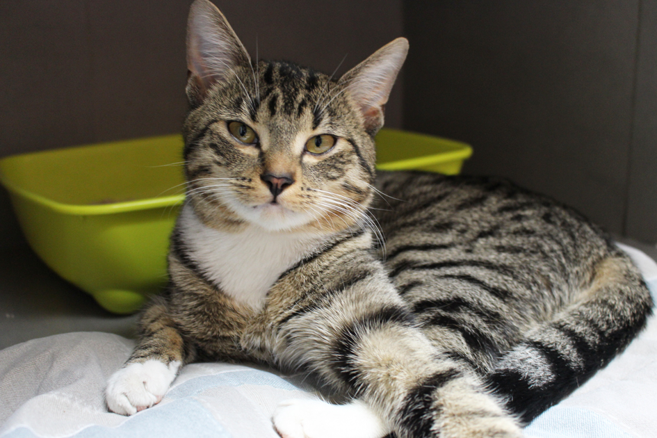
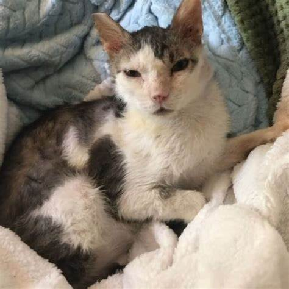

Animais disponíveis para doação
Já pensou em adotar um cachorrinho ou gatinho? Aqui você vai encontrar diversos animais prontinhos para fazer parte da sua família
Caso tenha interesse é só dar like na foto do animal que você será redirecionado para um formulário inicial de adoção.

Nome: Laila
Idade: 9 meses
Gosto muito de brincar e dormir no colo.

Nome: Duky
Idade: 5 meses
Ainda sou um filhote e procuro um amiguinho.

Nome: Pyke
Idade: 1 ano
Sou o Pyke adoro meus brinquedos e também gosto de carinho.

Nome: Belinha
Idade: 3 anos
Eu sou a belinha, adoro passear no parque.

Nome: Max
Idade: 4 anos
Sou o Max, amigável e adoro uma soneca.
Nome: Bob
Idade: 2 anos
Meu nome é Bob, e pela minha cara já sabe ne ? adoro brincar

Nome: Melissa
Idade: 4 anos
Sou a Melissa, procuro um amiguinho bem legal, gosto de ração e brinquedos

Nome: Bob
Idade: 2 meses
Olá sou o Felix, sou um filhote a procura do meu primeiro amiguinho